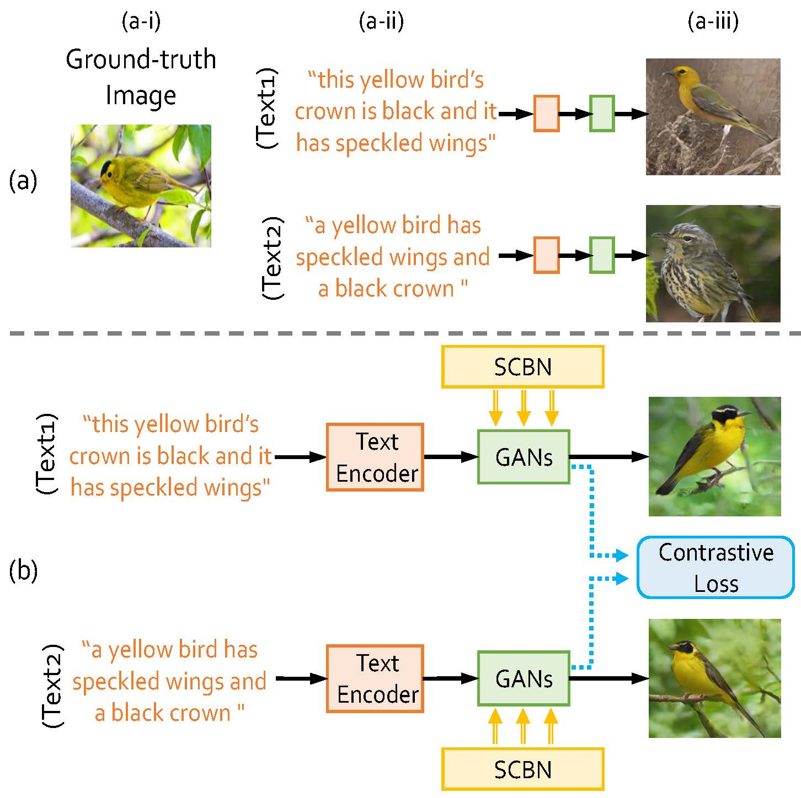
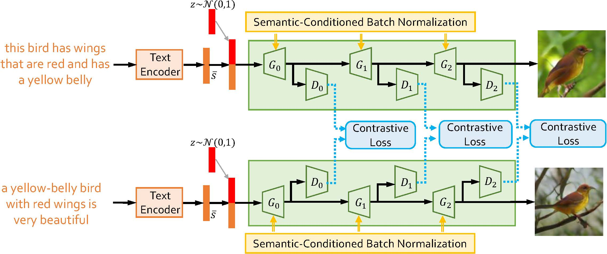
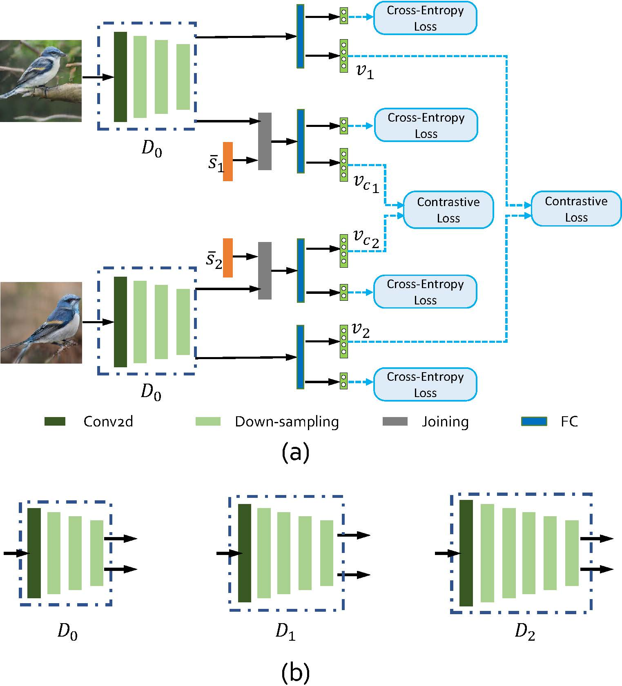
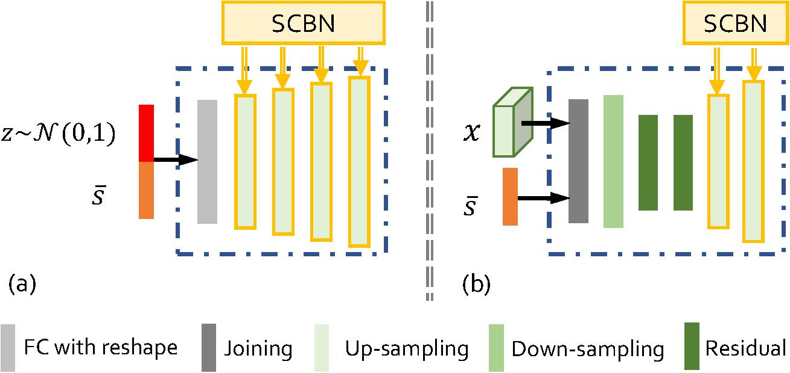
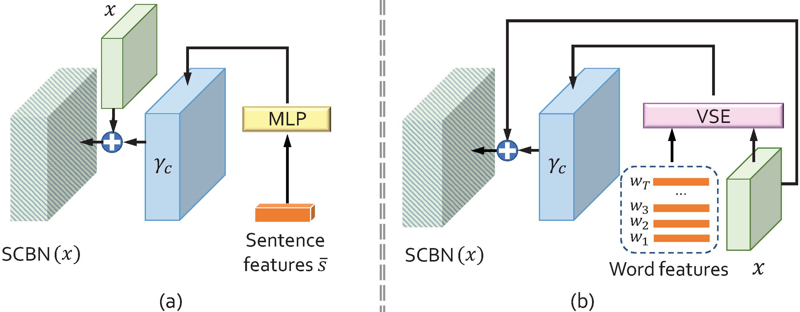

Guojun Yin1,2,
Bin Liu1,
Lu Sheng2,4,
Nenghai Yu1,
Xiaogang Wang2,
and Jing Shao3
1University of Science and Technology of China, 2The Chinese University of Hong Kong,
3SenseTime Research, 4Beihang University
[PDF]
[Code]
[Homepage]
[Video]
Introduction
Synthesizing photo-realistic images from text descriptions is a challenging problem. Previous studies have shown remarkable progresses on visual quality of the generated images. In this paper, we consider semantics from the input text descriptions in helping render photo-realistic images. However, diverse linguistic expressions pose challenges in extracting consistent semantics even they depict the same thing. To this end, we propose a novel photo-realistic text-to-image generation model that implicitly disentangles semantics to both fulfill the high-level semantic consistency and low-level semantic diversity. To be specific, we design (1) a Siamese mechanism in the discriminator to learn consistent high-level semantics, and (2) a visual-semantic embedding strategy by semantic-conditioned batch normalization to find diverse low-level semantics. Extensive experiments and ablation studies on CUB and MS-COCO datasets demonstrate the superiority of the proposed method in comparison to state-of-the-art methods.

The contributions of this work:
- Distill Semantic Commons from Text ---The proposed SDGAN distills semantic commons from the linguistic descriptions, based on which the generated images can keep generation consistency under expression variants. To our best knowledge, it is the first time to introduce the Siamese mechanism into the cross-modality generation.
- Retain Semantic Diversities & Details from Text --- To complement the Siamese mechanism that may lose unique semantic diversities, we design an enhanced visual-semantic embedding method by reformulating the batch normalization layer with the instance linguistic cues. The linguistic embedding can further guide the visual pattern synthesis for fine-grained image generation.
- The proposed SD-GAN achieves the state-of-the-art performance on the CUB-200 bird dataset and MS-COCO dataset for text-to-image generation.
Semantics Disentangling Generative Adversarial Network (SD-GAN)
In this paper, we propose a new cross-modal generation network named as Semantics Disentangling Generative Adversarial Network (SD-GAN) for text-to-image generation. It aims at distilling the semantic commons from texts for image generation consistency and meanwhile retaining the semantic diversities & details for fine-grained image generation: (1) Taking the advantages of Siamese structure, the generated images are not only based on the input description at the current branch, but also influenced by the description at the other branch. In other words, the Siamese structure distills the common semantics from texts to handle the generation deviation under the expression variants. (2) To generate fine-grained visual patterns, the model also needs to retain the detailed and diverse semantics of the input texts. We modulate neural activations with linguistic cues by the proposed Semantic-Conditioned Batch Normalization (SCBN).

Siamese structure with Contrastive Loss
Although existing methods achieved excellent performances on high-resolution image generation, the generation deviations from language expression variants still pose great challenges for the text-semantic image generation. To address the issues, the proposed SD-GAN adopts a Siamese structure for distilling textual semantic information for the cross-domain generation. The contrastive loss is adopted for minimizing the distance of the fake images generated from two descriptions of the same groundtruth image while maximizing those of different groundtruth images. During the training stage, the generated image is influenced
by the texts from both two branches.

We adopt hierarchical stages from lowresolution to high-resolution for the photo-realistic image generation. Given the sentence feature from the text encoder
E and a noise vector z sampled from a standard normal distribution, the low resolution image is generated at the initial stage. The following stage uses the output of the former stage as well as the sentence feature to generate the image with higherresolution.

Semantic-Conditioned Batch Normalization (SCBN)
In this work, we consider the linguistic concepts as the kernels of visual representations for cross-domain generation from linguistic to vision. Inspired by the instance normalization in the existing works, we modulate the conditional batch normalization with the linguistic cues from the natural language descriptions, defined as Semantic-Conditioned Batch Normalization (SCBN). The purpose of SCBN is to reinforce the visual-semantic embedding in the feature maps of the generative networks. It enables the linguistic embedding to manipulate the visual feature maps by scaling them up or down, negating them, or shutting them off, etc. It complements to the Siamese structure which only focuses on distilling semantic commons but ignore the unique semantic diversities in the text.

Reference
If you use our code or model, please cite our papers.
Yin, Guojun, Bin Liu, Lu Sheng, Nenghai Yu, Xiaogang Wang, and Jing Shao. "Semantics Disentangling for Text-to-Image Generation", in Proceedings of IEEE Conference on Computer Vision and Pattern Recognition (CVPR 2019).
Contact Me
If you have any questions, please feel free to contact me (gjyin91@gmail.com or gjyin@mail.ustc.edu.cn).
Last
update: June 11, 2019